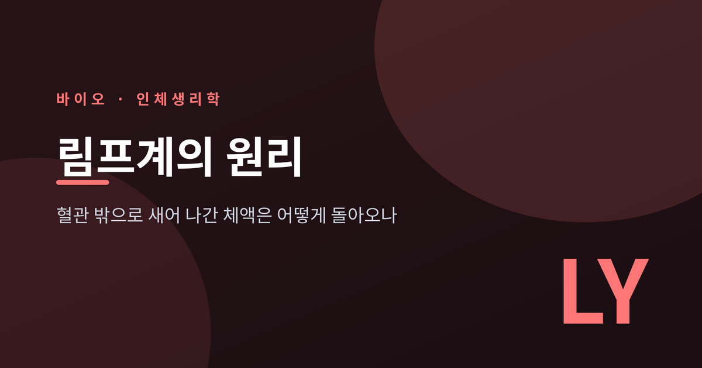
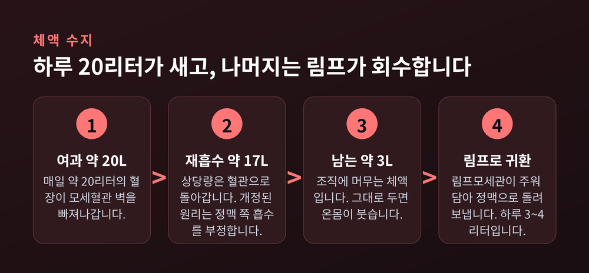
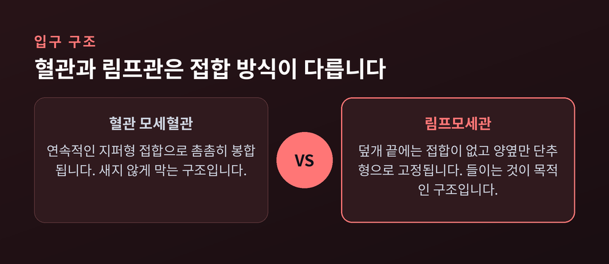
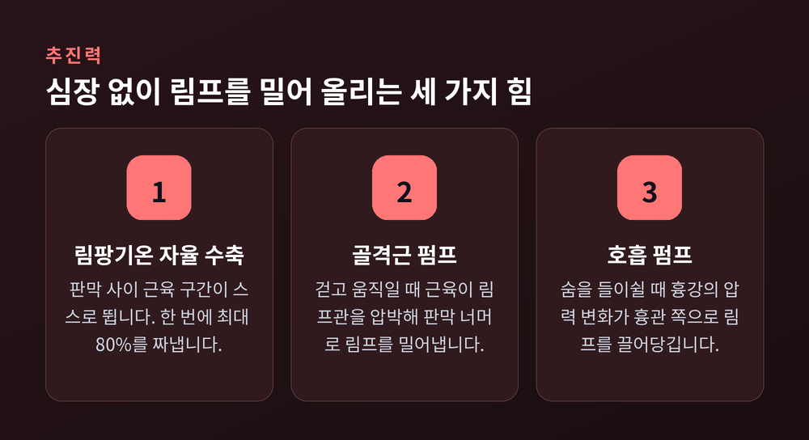
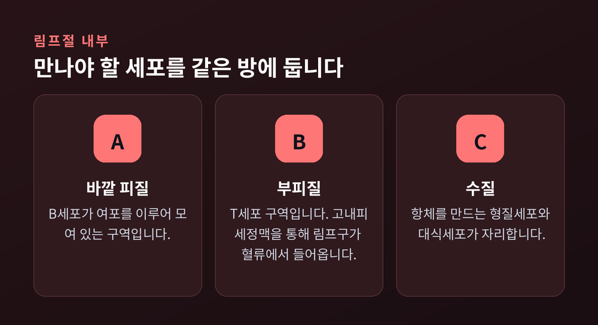
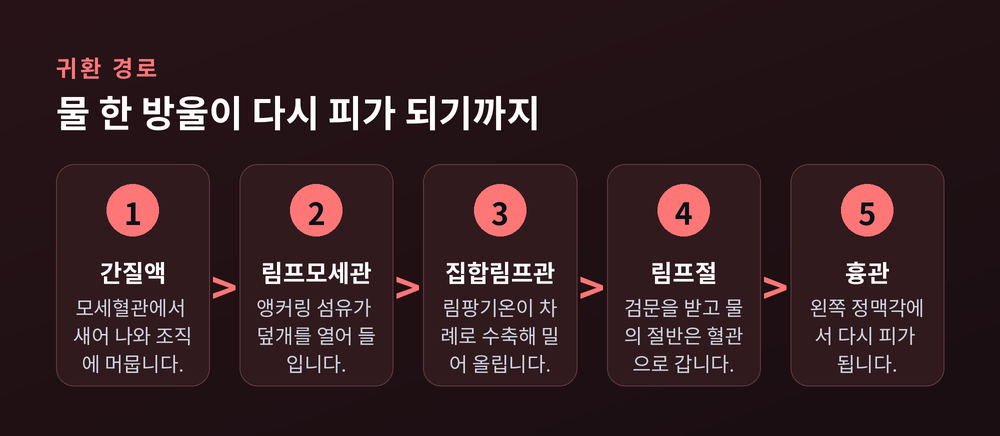
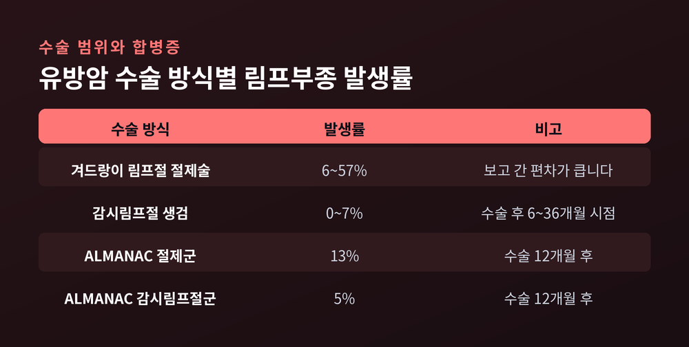

림프계의 원리, 혈관 밖으로 새어 나간 체액과 면역세포는 어떻게 돌아오나

이번 글에서는 림프계가 실제로 어떻게 작동하는지 배관의 관점에서 정리해 보겠습니다. 면역 이야기가 아니라, 몸 안의 두 번째 순환 시스템이 어떤 구조로 체액을 회수하는지에 집중합니다.
먼저 세 줄로 요약합니다.
- 모세혈관에서는 하루 20리터 가까운 혈장이 조직으로 빠져나가고, 그중 상당량은 정맥으로 돌아가지 못합니다.
- 림프계는 막다른 관에서 시작해 단추형 접합과 앵커링 섬유로 만든 일방통행 입구로 그 체액을 주워 담습니다.
- 중앙 펌프 없이 관 스스로 수축해 림프절을 거친 뒤, 흉관을 통해 목 아래 정맥으로 되돌려 놓습니다.
■하루에 몇 리터가 혈관 밖으로 새는가
출발점은 모세혈관입니다.
영국 생리학자 어니스트 스탈링의 이름을 딴 스탈링 힘은 모세혈관 벽을 가로지르는 체액의 방향을 결정합니다. 안쪽으로 미는 정수압과, 단백질이 물을 붙잡아 두는 교질삼투압이 서로 겨룹니다. 정상 상태에서 이 힘의 균형은 혈류에서 조직 쪽으로 체액을 내보내는 쪽으로 기웁니다.
숫자로 보면 규모가 실감 납니다. 클리블랜드 클리닉의 설명에 따르면 매일 약 20리터의 혈장이 모세혈관 벽의 미세한 구멍으로 빠져나갑니다. 이 중 약 17리터가 되돌아가고, 남는 3리터가 조직 사이에 머뭅니다. 하루 3리터면 1.5리터 생수병 두 개 분량입니다. 회수되지 않으면 우리 몸은 며칠 만에 물주머니가 됩니다.
다른 자료는 조금 다르게 봅니다. 대부분의 생리학 교과서는 스탈링 힘으로 하루 약 4리터의 림프가 만들어진다고 보고, 여기에 한 가지 단서를 답니다. 림프절을 지나는 동안 물의 절반가량이 다시 모세혈관으로 흡수되기 때문에, 림프절에 닿기 전 구심성 림프관의 실제 유량은 이보다 훨씬 클 수 있다는 것입니다.
정확한 숫자는 아직 범위로 남아 있습니다. 다만 "하루 수 리터"라는 규모에는 이견이 없습니다.

■교과서가 바뀌었습니다 — 개정된 스탈링 원리
오래된 설명은 이랬습니다. 모세혈관 동맥 쪽에서 체액이 빠져나가고, 정맥 쪽에서 대부분 다시 빨려 들어가며, 림프계는 남은 10% 정도만 처리한다는 그림입니다.
지금은 다르게 봅니다.
레빅과 미셸은 실제 반투막 역할을 하는 것이 혈관 내피 표면을 덮은 당질층이라는 점을 제시했습니다. 이 층을 기준으로 계산하면, 창문이 없는 일반 모세혈관은 혈관 전 구간에 걸쳐 체액을 내보내기만 합니다. 정맥 쪽 모세혈관과 소정맥에서의 흡수는 일어나지 않습니다. 당질층을 가로지르는 교질삼투압 차이는 여과 속도를 늦출 뿐, 방향을 뒤집지 못합니다.
이것을 '흡수 없음 규칙'이라 부릅니다.
결론이 바뀝니다. 새어 나간 체액의 대부분은 림프를 통해 돌아옵니다. 림프계는 보조 배수로가 아니라 주 귀환 경로입니다. 단백질도 마찬가지여서, 혈청 단백질의 40~50%가 매일 이 길로 수송됩니다.
예전엔 림프계를 면역의 부속 기관으로 배웠습니다. 지금은 순환계의 필수 반쪽으로 읽습니다.
■입구의 비밀 — 단추와 닻줄
새어 나간 체액을 어떻게 다시 담을까요. 문제는 입구입니다.
림프모세관은 막다른 끝에서 시작합니다. 동맥에서 이어지는 관이 아니라, 조직 한가운데 홀로 끝이 막힌 채 서 있는 관입니다. 이 관의 내피세포는 참나무 잎 모양이고, 이웃 세포와 가장자리가 서로 겹칩니다.
핵심은 이 겹친 덮개가 붙어 있는 방식입니다. 일반 혈관 내피는 연속적인 지퍼형 접합으로 촘촘히 봉합돼 있습니다. 림프모세관은 다릅니다. 덮개의 끝부분에는 접합이 아예 없고, 양옆만 띄엄띄엄한 단추형 접합으로 고정돼 있습니다. 단추 몇 개만 채운 셔츠 앞섶을 떠올리시면 됩니다.
여기에 닻줄이 하나 더 붙습니다. 에밀린-1과 피브릴린이 주성분인 앵커링 섬유가 림프내피세포를 주변 세포외기질에 붙들어 맵니다. 조직이 부어오르면 보통의 물렁한 관은 눌려 닫힙니다. 림프모세관은 반대로 행동합니다. 섬유가 덮개를 바깥으로 잡아당겨 입구를 열어 줍니다.
그다음은 압력이 알아서 합니다. 간질압이 오르면 체액과 용질이 열린 틈으로 밀려 들어갑니다. 들어간 체액이 밀려 나오려 하면 덮개가 안쪽에서 닫힙니다. 판막이라는 별도 부품 없이, 세포의 배치 자체가 일방통행을 만든 셈입니다.
체액이 고일수록 입구가 넓어지는 구조 — 이것이 림프모세관의 설계 원리입니다.

■심장이 없는데 어떻게 흐르는가
림프계에는 중앙 펌프가 없습니다. 심장이 없습니다.
그런데도 림프는 발끝에서 목까지 중력을 거슬러 올라갑니다. 방법은 세 가지입니다.
첫째, 관 스스로 뜁니다. 집합림프관은 두 개의 판막 사이에 갇힌 근육성 구간으로 나뉘는데, 이 단위를 림팡기온이라 부릅니다. 림팡기온은 위상성 수축을 하며 림프를 다음 칸으로 밀어냅니다. 한 번 수축할 때 내부 용적의 최대 80%까지 짜냅니다. 연구자들이 이것을 "작은 심장"이라 부르는 이유입니다.
둘째, 이 수축에는 자체 박동원이 있습니다. 림프근세포는 장벽의 비슷한 수축세포와 달리 자기만의 페이스메이커를 내장하고 있습니다. 막전위 진동과 칼슘 진동이 맞물린 이중 시계 모델로 설명되는데, 심장 박동원과 원리가 닮았습니다.
흥미로운 것은 반응 방식입니다. 수축 빈도는 분당 1회 미만에서 20회 이상까지 움직입니다. 생쥐 다리의 집합림프관에서 관내압을 0.5 cmH₂O에서 10 cmH₂O로 올리자 자발 수축이 분당 약 3회에서 20회로 빨라졌습니다. 체액이 고여 압력이 오를수록 펌프가 스스로 빨라집니다. 수요에 반응하는 자동 조절입니다.
셋째, 바깥에서 짜 줍니다. 걷거나 움직일 때 골격근이 림프관을 압박해 판막 너머로 림프를 밀어냅니다. 호흡도 거듭니다. 숨을 들이쉴 때 흉강의 압력 변화가 특히 흉관 쪽으로 림프를 끌어당깁니다. 심장과 골격근, 흉부와 장벽에서는 이 외재적 펌프가 우세하고, 나머지 대부분의 영역에서는 관 자체의 수축이 결정적입니다.
오래 앉아 있을 때 다리가 붓는 이유가 여기 있습니다. 펌프 하나가 놀고 있기 때문입니다.

■검문소 — 림프절은 왜 세 구역으로 나뉘어 있나
림프는 곧장 정맥으로 가지 않습니다. 중간에 반드시 검문소를 지납니다.
몸에는 약 600개의 림프절이 흩어져 있습니다. 자료에 따라 500~600개, 개체차를 넓게 잡으면 400~800개로 서술합니다. 워낙 작고 깊이 묻힌 것이 많아 정확히 세는 일 자체가 어렵다는 단서가 늘 따라붙습니다.
림프절 내부는 세 층으로 나뉩니다.
바깥 피질에는 B세포가 여포를 이루고 모여 있습니다. 안쪽 피질, 곧 부피질은 T세포 구역입니다. 가장 안쪽 수질에는 항체를 만드는 형질세포와 대식세포가 자리합니다. 구역이 나뉜 이유는 단순합니다. 만나야 할 세포끼리 같은 방에 두기 위해서입니다.
부피질에는 고내피세정맥이라는 특이한 혈관이 지납니다. 보통의 모세혈관 후 세정맥은 납작한 내피로 덮여 있는데, 이 혈관은 단층 입방상피로 덮여 있어 키가 큽니다. 순환 중인 림프구가 혈류를 떠나 림프절로 들어오는 문이 바로 여기입니다. 부피질 깊은 곳의 굵은 구간에서 통과가 가장 활발합니다.
이렇게 해서 림프구는 끊임없이 돕니다. 혈액에서 림프절로, 림프절에서 림프관으로, 다시 혈액으로. 이것을 림프구 재순환이라 부릅니다.
왜 이 수고를 할까요. 어떤 항원에 딱 맞는 T세포는 극히 드물기 때문입니다. 그 드문 세포가 마침 그 항원을 들고 온 수지상세포와 마주칠 확률을 최대로 끌어올리려면, 쉼 없이 자리를 바꾸는 수밖에 없습니다. 자기 수용체에 맞는 항원을 만나지 못한 T세포는 원심성 림프관으로 빠져나가 다음 순환을 시작합니다.
수지상세포의 역할은 한 가지가 더 있습니다. 항원을 제시할 뿐 아니라, 고내피세정맥의 성질을 조절해 림프구가 얼마나 들어올지까지 통제합니다. 문지기와 안내자를 겸하는 셈입니다.
림프절은 물도 처리합니다. 통과하는 림프에서 물의 절반가량을 다시 모세혈관으로 되돌려 보냅니다. 검문소이면서 농축기입니다.

■지방만 다니는 길 — 유미관
림프계에는 전용 화물 노선이 하나 있습니다.
소장 융모 한가운데에는 유미관이라는 특화된 림프모세관이 막다른 형태로 서 있습니다. 식사로 들어온 장쇄지방산과 모노아실글리세롤은 장세포에서 흡수된 뒤, 킬로미크론이라는 중성지방 덩어리 지단백질로 재포장됩니다. 그리고 혈관이 아니라 유미관으로 들어갑니다.
이유는 크기입니다. 대부분의 영양소는 모세혈관 벽의 미세한 구멍을 그대로 통과합니다. 그런데 어떤 지방과 분자는 그 구멍으로 나가기에 너무 큽니다. 림프계가 이 화물을 대신 실어 나릅니다.
진입 방식도 단순한 스며듦이 아닙니다. 킬로미크론에서 나온 지질이 림프내피세포의 ROCK 신호를 켜서 접합을 붙들고 있던 스트레스섬유를 수축시키고, 그 결과 유미관의 접합이 열립니다. 화물이 스스로 문을 여는 셈입니다. 킬로미크론의 진입과 장 림프모세관 안에서의 이동 모두 능동적 과정으로 확인됐습니다.
지방을 먹은 뒤 장 림프가 뿌옇게 흐려지는 현상이 여기서 나옵니다. 유미(chyle)라는 이름이 붙은 이유이기도 합니다.
■종착역 — 흉관에서 정맥각으로
모든 노선은 두 개의 관으로 합류합니다. 오른림프관과 흉관입니다.
흉관이 주력입니다. 하루 거의 4리터의 유미를 실어 나르며, 그 대부분이 소화관에서 올라온 것입니다. 실측 유량은 시간당 60~190mL, 하루로 환산하면 약 1.4~4.6리터입니다. 식단에 따라 체중 1kg당 하루 100mL까지 올라가기도 합니다.
종점은 목 아래입니다. 속목정맥과 빗장밑정맥이 만나 팔머리정맥을 이루는 지점을 정맥각이라 부르는데, 흉관은 왼쪽 정맥각으로 들어갑니다. 95% 이상의 경우 속목정맥이나 빗장밑정맥, 또는 그 사이 각도에서 끝납니다.
접합부에는 두 첨판으로 된 판막이 하나 더 있습니다. 압력이 더 높은 정맥의 피가 림프관으로 역류하지 못하게 막는 마지막 장치입니다.
조직에서 새어 나간 물 한 방울이 림프모세관의 단추 틈으로 들어가, 림팡기온의 수축을 여러 번 얻어 타고, 림프절에서 검문을 받은 뒤, 목 아래 정맥에서 다시 피가 됩니다. 이 한 바퀴가 림프계의 전부입니다.

■이 배관이 막히면
구조를 이해하면 고장도 이해됩니다.
간질의 유순도가 커지면 체액이 더 쌓여도 간질압이 잘 오르지 않게 됩니다. 압력이 올라야 림프 펌프가 빨라지는데, 그 신호가 둔해지는 것입니다. 부종을 막아 주던 안전장치가 약해집니다.
림프관이나 림프절이 흉터로 막히면 림프부종이 생깁니다. 암 치료를 위해 림프절을 제거한 경우에도 나타납니다. 체액은 주로 팔이나 다리에 고입니다. 아주 가벼울 수도 있고, 통증과 장애를 동반할 만큼 무거울 수도 있습니다. 고인 체액은 감염에도 취약해, 깊은 피부 감염이 심각하게 번질 위험이 따릅니다.
유방암 수술이 대표적 사례입니다. 겨드랑이 림프절을 넓게 걷어내는 절제술 후 림프부종 발생률은 보고에 따라 6~57%로 넓게 나타납니다. 감시림프절 하나만 확인하는 생검으로 바꾸면 수술 후 6~36개월 시점에 0~7% 수준으로 떨어집니다. ALMANAC 시험에서는 수술 12개월 후 절제군 13%, 감시림프절군 5%로 갈렸습니다. 수술 범위를 줄이는 방향으로 치료가 바뀐 배경에는 이 숫자가 있습니다.
전 세계로 넓히면 규모가 더 큽니다. 림프사상충증은 72개국에서 1억 2천만 명 이상에게 영향을 미쳤고, 기준선 추정으로 1,500만 명 이상이 림프부종을 앓았습니다. 2000년 이후 대규모 투약이 이어지며 2018년 감염자는 5,100만 명으로 74% 줄었습니다.
암 전이 이야기도 빼놓을 수 없습니다. 림프계는 면역세포의 통로인 동시에 암세포의 통로이기도 합니다. 종양이 내보내는 VEGF-C는 감시림프절 안의 림프관 네트워크를 확장시키는데, 놀랍게도 전이가 일어나기 전부터 그렇게 합니다. 도착하기 전에 미리 길을 닦는 셈입니다. 동물 실험에서는 림프절 침범이 없으면 원격 장기 전이도 관찰되지 않았습니다. 감시림프절을 먼저 확인하는 이유가 여기 있습니다.

■뇌에도 림프관이 있었습니다
마지막 조각은 최근에 맞춰졌습니다.
오랫동안 교과서는 중추신경계에 림프계가 없다고 가르쳤습니다. 뇌는 면역학적으로 고립된 특별한 장기라는 설명이었습니다.
2015년에 이 정설이 무너집니다. 한 연구진이 생쥐의 경막정맥동 안에서 기능하는 림프관을 찾아냈고, 같은 해 다른 연구진이 독립적으로 같은 결론에 도달했습니다. 이 혈관의 세포는 림프내피세포의 분자적 특징을 갖고 있었고, 뇌척수액에서 체액과 면역세포를 실어 날랐으며, 깊은목림프절과 해부학적으로 이어져 있었습니다. 생쥐 뇌실에 주입한 색소는 30분 안에 목의 림프절에 도달했습니다.
여기에 글림프계라는 개념이 붙습니다. 뇌척수액과 간질액의 교환으로 뇌 전체의 노폐물을 씻어내는 통로입니다. 노폐물을 실은 간질액은 정맥 주위 공간을 거쳐 경막림프관으로 빠지고, 경부 림프절을 지나 전신 순환으로 처리됩니다.
이후 연구에서 생쥐와 사람 모두에서 보존된 경막 림프 배출 회로가 확인됐습니다.
다만 여기서 한 걸음 더 나가는 것은 아직 이릅니다. 알츠하이머를 비롯한 신경질환과의 관계는 치료 표적으로 연구되고 있는 단계이지, 확립된 치료법이 아닙니다. 과장 없이 말하면, 뇌에도 배수로가 있다는 사실이 확인된 것까지가 현재 지점입니다.
정리하면 이렇습니다.
림프계는 흔히 면역의 부속 기관으로 소개되지만, 구조를 뜯어보면 그보다 먼저 배관입니다. 심장 없이 뛰는 관, 판막 없이 일방통행을 만드는 세포 배치, 압력이 오를수록 빨라지는 펌프, 중간중간 놓인 검문소. 하나같이 중앙 통제 없이 국소적으로 문제를 푸는 설계입니다.
"새어 나간 것을 되돌리는 일에도 시스템이 필요합니다."
몸에서 가장 조용한 순환이 하루도 쉬지 않는다는 사실 — 알고 나면 부은 다리를 대하는 눈이 조금 달라집니다.
덧붙입니다. 이 글은 림프계의 작동 원리를 정리한 것이지 진단이나 치료를 위한 안내가 아닙니다. 원인 모를 부기가 몇 주 이상 이어지거나 일상에 지장을 준다면, 혼자 판단하지 마시고 의료진과 상담하시길 권합니다.